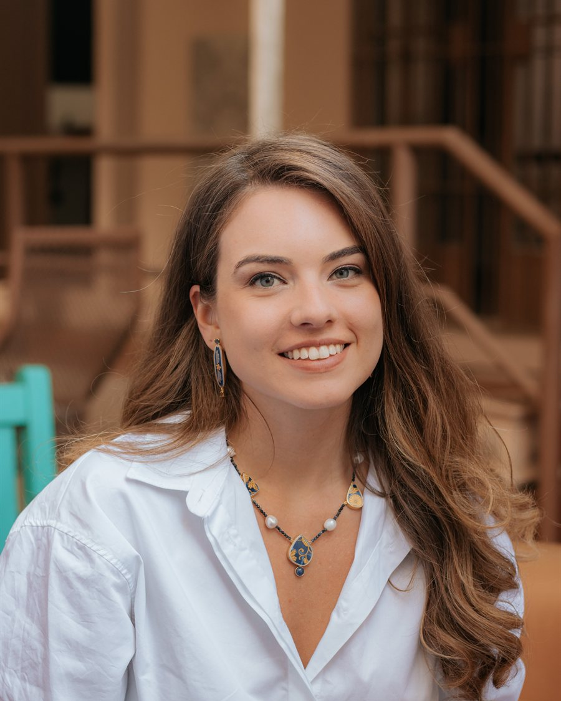
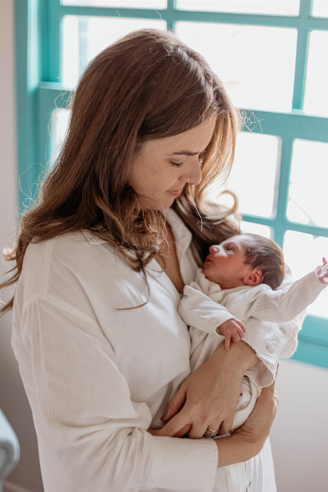

Foto do eventofotos/nov-stoller-convencao.jpg
Convenção Stoller
A IA que multiplica o que o time já sabe fazer.
Eu não sou desenvolvedora. Sou empresária. E foi exatamente por isso que aprendi a usar inteligência artificial (IA) — o Claude no meu dia a dia — do jeito que funciona pra quem trabalha de verdade.

Eu empreendo há mais de 10 anos. Comecei a carreira dentro de grandes empresas, como a Whirlpool e a SulAmérica, aprendendo como as coisas funcionam por dentro de uma operação de verdade. Mas foi tocando os meus próprios negócios que eu me encontrei.
Por 8 anos toquei a Casa Kahla, meu negócio, do jeito que todo dono de empresa conhece bem: fazendo de tudo, ao mesmo tempo, com o dia nunca dando conta do que precisava ser feito. Como toda empresária, eu vivia sobrecarregada. Não faltava vontade nem trabalho. Faltava tempo.
Foi aí que a IA entrou. Primeiro por curiosidade. Depois por paixão.
Quando descobri o tanto que ela podia fazer por mim, virou outra coisa. Não era um assunto de tecnologia, era uma forma de recuperar o meu tempo e fazer mais com menos gente, menos horas, menos peso nas costas.
E teve um momento que me deu a coragem que faltava pra virar a chave de vez: quando eu virei mãe. Ser mãe muda a sua relação com o tempo de um jeito que nada mais muda. De repente, cada hora do dia passou a valer mais. Foi aí que eu decidi que ia mudar de carreira mais uma vez e mergulhei de cabeça nesse universo.

Passei pela Blackbox AI, como gerente de Growth, direto do Vale do Silício. E foi lá, no epicentro de tudo, que a ficha caiu de vez:
O que falta pras pessoas não é tecnologia. É saber usar.
No meio de tanta informação nova todo dia, o difícil não é ter acesso à ferramenta. É decidir o que, de fato, é útil pra sua rotina. E aí eu tomei a decisão que mudou tudo: sair pra trazer esse conhecimento pra cá. Pro Brasil, pras empresas daqui, pra gente que trabalha de verdade e não tem tempo de ficar caçando cada novidade.
Foi assim que nasceu a NewScale. Eu criei a NewScale pra levar IA de verdade pra dentro das empresas brasileiras — automações que fazem o trabalho, não slides bonitos. Um exemplo real: um fluxo que levava 1,5 dia pra ser feito passou a rodar em 10 minutos. Eu enxergava empresários como eu, sobrecarregados, que usariam muito se alguém instalasse e ensinasse do jeito certo.
E o A Virada IA não nasceu separado. Nasceu junto, no mesmo movimento. É o braço de educação do mesmo trabalho: o Instagram, a biblioteca, o curso, os treinamentos corporativos. Eu ensino as pessoas a usar, e quando a empresa precisa que alguém construa, a NewScale constrói.
Educação e automação são o mesmo propósito. Só que em dois formatos.
Um lado ensina você a pensar com a IA. O outro coloca a IA pra trabalhar dentro da sua operação. IAs como o Claude me ajudam a criar coisas que eu nunca imaginei serem possíveis e a automatizar boa parte do meu trabalho — e é exatamente isso que eu quero colocar na sua mão.
Porque depois que você entende os conceitos, a tecnologia só fica mais fácil. E é isso que eu acredito de verdade: quem aprende IA agora vai olhar pra trás e ver que esse foi o momento da virada.
Do corporativo ao próprio negócio, do próprio negócio à IA. Cada fase preparou a próxima.
A carreira começa no corporativo, em empresas como Whirlpool e SulAmérica. Aprender como uma operação de verdade funciona por dentro.
Oito anos tocando o próprio negócio. Onde me encontrei como empresária e conheci de perto a sobrecarga de quem faz tudo ao mesmo tempo.
Primeiro por curiosidade. Depois por paixão. Descobrir o tanto que a IA podia fazer por mim virou uma forma de recuperar o meu tempo.
Quando o Arthur nasceu, a minha relação com o tempo mudou. Foi a coragem que faltava pra mudar de carreira mais uma vez.
Gerente de Growth, direto do Vale do Silício. A ficha cai de vez: o que falta pras pessoas não é tecnologia, é saber usar.
Decidi voltar pra trazer esse conhecimento pra cá. A NewScale constrói as automações; A Virada IA ensina. Mesmo propósito, dois formatos.
Eu cheguei ao mundo da IA com uma visão diferente: a de quem trabalha de verdade e precisa de resultado, não de hype. O difícil nunca foi o acesso à tecnologia. É decidir, no meio de tanta novidade, o que é de fato útil pra sua rotina.
Você não precisa correr atrás de cada novidade. Quando você entende como a IA funciona, ela passa a trabalhar por você. E é por isso que eu ensino conceito antes de ferramenta: depois que você entende, a tecnologia só fica mais fácil.
Palestras, imersões e treinamentos de IA com times de empresas de todo o país.
A IA que multiplica o que o time já sabe fazer.

Imersão de IA com Claude pros colaboradores do Ismart.

Não é só escrever prompt — é saber planejar. Treinamento do time.
Seja de graça, com profundidade ou dentro da sua empresa. Escolhe por onde a sua virada começa.
Todo prompt, dica e recurso que eu compartilho, num lugar só. Pronto pra copiar e usar.
Entrar na biblioteca →Claude com Profundidade: a nova forma de pensar e usar IA, sem programar. Coorte 1 em agosto.
Entrar na lista da Coorte 1 →A NewScale instala a IA que faz o trabalho por você, dentro da sua operação.
Automatizar minha operação →